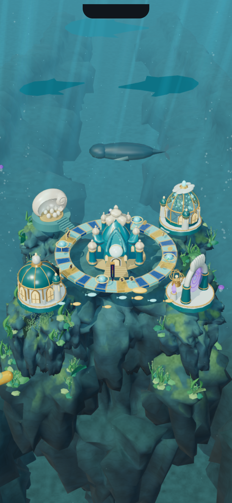
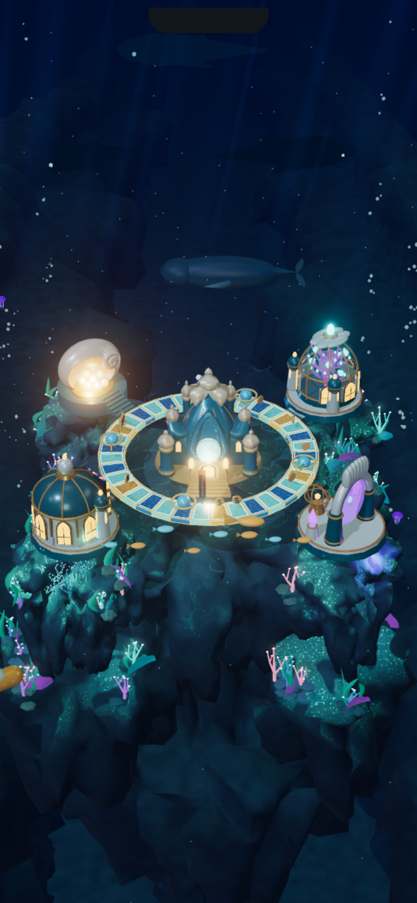

Abyssal Pearl Kingdom · V2
The retained V2 milestone: a real 3D underwater environment, pearl-finished architecture, illuminated board, a green reef that glows at night, rooted kelp motion, swimming creatures and distant watchful shadows.

Day · green living reef
Night · bioluminescent kingdomExplore day · Explore night
This milestone remains a development preview. Production activation and physical-phone acceptance are separate. The experimental Pearlback model did not pass review and is excluded; the retained creatures remain. The expanded special-mission idea remains a concept, with existing gameplay unchanged.